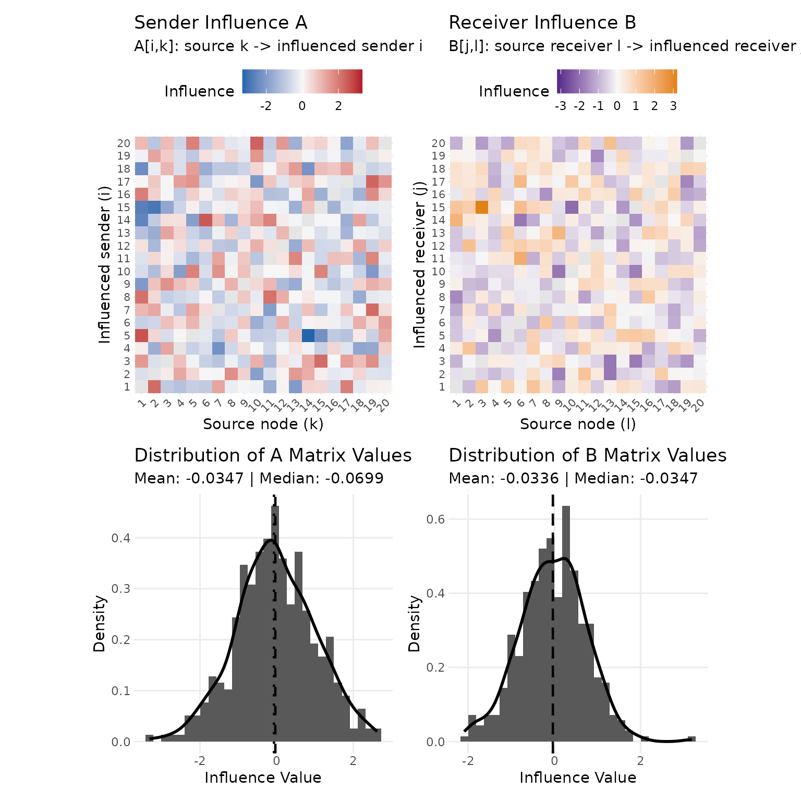
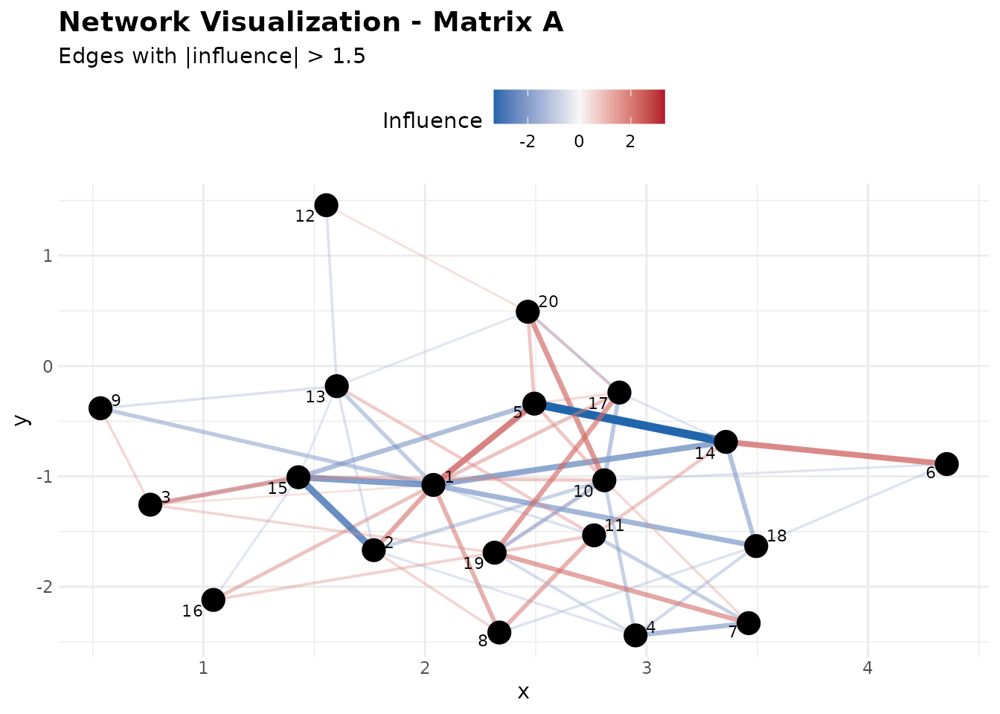

Getting Started with Social Influence Regression
Shahryar Minhas & Peter Hoff
Source:vignettes/sir_overview.Rmd
sir_overview.RmdWhat problem does SIR solve?
You have a directed network observed repeatedly over time — say, monthly counts of conflictual events that country directs at country . Ordinary regression treats each dyad-time as independent. That misses the defining feature of relational data: what an actor does next depends on what the whole network did last period, and some actors propagate their behavior onto others more than others do.
Social Influence Regression (SIR) is designed for that setting. It regresses the current network on a lagged, influence-carrying network through a pair of influence matrices, and :
The mean is then : expected counts for Poisson, expected continuous values for Normal, and tie probabilities for Binomial.
- is sender-side influence: is how strongly node ’s past behavior shapes node ’s future outgoing ties.
- is receiver-side influence: is how strongly node shapes node ’s future incoming ties.
- are ordinary direct effects of exogenous dyadic covariates .
The key idea (Minhas & Hoff, Political Analysis 2025) is that the otherwise huge and are explained by covariates :
So instead of
free influence weights you estimate two short coefficient vectors
and
that say which observable features are associated with stronger
influence channels. See vignette("methodology") for
the full framework and identification details.
Causal interpretation. In this vignette, “influence” means a lagged, model-implied predictive channel. Reading it causally requires a research design in which temporal ordering, the exogeneity of
WandZ, the lag construction, unmeasured confounding, and the proposed intervention are all defensible. Without those assumptions, report SIR estimates as conditional temporal associations.
The three covariate roles (W vs. X vs. Z)
What each input does:
| Input | Dimension | Role |
|---|---|---|
| Y | outcome network (counts, continuous, or 0/1) | |
| X | the lagged signal that flows through influence (typically for counts) | |
| W | influence covariates that parameterize and — what makes a tie a channel of influence (alliance, shared membership, proximity, …) | |
| Z | exogenous dyadic covariates with direct effects (distance, trade, …) |
W describes which dyads can carry lagged influence; X is the lagged signal that flows through it; Z are direct effects that bypass the influence term.
A first fit: simulate, fit, recover
sim_sir() generates data from a known SIR process, so
you can confirm the estimator recovers the truth before trusting it on
real data. We pass gain = 0.9 so the lagged influence
network is a strong (but still stationary) driver of future ties — that
makes the influence mechanism, the whole point of SIR, clearly visible
in the examples below. (sim_sir() also bakes in a
scaling of
so the bilinear predictor stays on a sane scale as the network grows;
see “Building X” below.)
set.seed(42)
dat <- sim_sir(m = 20, T_len = 120, p = 2, q = 2, family = "poisson", gain = 0.9, seed = 42)
fit <- sir(dat$Y, W = dat$W, X = dat$X, Z = dat$Z, family = "poisson", seed = 1)
fit
#> Estimate Std. Err
#> (Z) Z1 0.2374 0.0037
#> (Z) Z2 -0.3618 0.0036
#> (alphaW) W2 0.4097 0.0044
#> (betaW) W1 -0.6540 0.0032
#> (betaW) W2 0.4167 0.0040The printout carries a Std. Err column: that is the
classical Hessian SE, which can understate uncertainty for dependent
network data. Treat it as a quick look only — for reporting we use the
cluster-robust intervals from confint() shown below.
How well did we recover the truth? coef() reports one
normalized parameterization with
fixed at 1. That is useful for reading the software output, but the
invariant influence object is
and the fitted means. We start with the normalized coefficient table
because that is what users see from coef():
truth <- c(dat$theta, dat$alpha[-1], dat$beta)
estimated <- coef(fit)
data.frame(
term = names(estimated),
truth = round(truth, 3),
estimate = round(unname(estimated), 3),
abs_error = round(abs(truth - unname(estimated)), 3)
)
#> term truth estimate abs_error
#> 1 (Z) Z1 0.237 0.237 0.001
#> 2 (Z) Z2 -0.365 -0.362 0.004
#> 3 (alphaW) W2 0.411 0.410 0.002
#> 4 (betaW) W1 -0.651 -0.654 0.003
#> 5 (betaW) W2 0.418 0.417 0.002The rank-at-most-one influence coefficient matrix is also close:
C_truth <- outer(dat$alpha, dat$beta)
C_estimated <- outer(fit$alpha, fit$beta)
data.frame(
quantity = c("maximum absolute C error", "relative Frobenius C error"),
value = round(c(
max(abs(C_truth - C_estimated)),
sqrt(sum((C_truth - C_estimated)^2)) / sqrt(sum(C_truth^2))
), 3)
)
#> quantity value
#> 1 maximum absolute C error 0.003
#> 2 relative Frobenius C error 0.005Both the direct effects and the influence coefficients land close to
the truth, and the rank-one influence matrix
— the quantity SIR actually identifies — recovers tightly. For
uncertainty, confint() reports cluster-robust intervals by
default, which account for the dyadic dependence in network data; the
classical errors that summary() prints assume independent
dyad-times. Here the two are close because the simulated dependence is
mild, but the gap can be large — the ICEWS example in
vignette("sir_inference") shows the cluster SEs running an
order of magnitude wider. See that vignette for the full treatment.
Aside — why ? The bilinear term is unchanged if you multiply by a constant and divide by . To pin this scale, SIR fixes the first sender coefficient at 1. So
coef()reports (each relative to that baseline of 1) and omits , while carries the overall scale. That is why the(alphaW)block has one fewer row than(betaW).
Reading the coefficient names
coef() and summary() tag every parameter by
its role:
-
(Z) ...— exogenous direct effects () -
(alphaW) ...— sender-influence coefficients () -
(betaW) ...— receiver-influence coefficients ()
The ... in each tag is the name of the corresponding
W slice (so a covariate named "ally" in
dimnames(W)[[3]] appears as (alphaW) ally and
(betaW) ally); unnamed slices fall back to W1,
W2, ….
ci <- confint(fit)
data.frame(
term = names(coef(fit)),
estimate = round(unname(coef(fit)), 3),
cluster_low = round(ci[, 1], 3),
cluster_high = round(ci[, 2], 3),
row.names = NULL
)
#> term estimate cluster_low cluster_high
#> 1 (Z) Z1 0.237 0.231 0.243
#> 2 (Z) Z2 -0.362 -0.372 -0.352
#> 3 (alphaW) W2 0.410 0.401 0.419
#> 4 (betaW) W1 -0.654 -0.660 -0.648
#> 5 (betaW) W2 0.417 0.408 0.426For applied reporting, use confint(fit) or
tidy(fit, conf.int = TRUE); both use cluster-robust
uncertainty by default for supported static directed and symmetric fits.
summary(fit) remains a compact Hessian-based printout for
quick model inspection.
Interpreting influence: who influences whom?
The coefficients say which covariates drive influence. To
answer who influences whom, and by how much, read the
reconstructed influence matrices fit$A and
fit$B: each off-diagonal A[i, k] is node
’s
influence on node
’s
outgoing ties. We blank the diagonal below because self-ties are
excluded from the model’s likelihood, so the diagonal of
is not interpreted. (order() returns positions into the
flattened matrix; arrayInd() turns each one back into its
[row, column] pair, where the column is the source actor
and the row is the influenced actor.)
A <- fit$A
diag(A) <- NA # self-influence is not modeled
typical <- mean(abs(A), na.rm = TRUE) # average |weight|, for scale
ord <- order(abs(A), decreasing = TRUE, na.last = NA)[1:5]
cells <- arrayInd(ord, dim(A)) # col 1 = influenced (row), col 2 = source (column)
data.frame(
source_node = cells[, 2], # column k (the influencer)
influenced_node = cells[, 1], # row i (the influenced)
influence = round(A[ord], 3),
vs_typical = round(abs(A[ord]) / typical, 1) # multiple of the average |weight|
)
#> source_node influenced_node influence vs_typical
#> 1 14 5 -3.319 4.0
#> 2 2 15 -2.898 3.5
#> 3 1 15 -2.699 3.3
#> 4 1 5 2.624 3.2
#> 5 1 14 -2.569 3.1The receiver-side matrix fit$B is read with the same
convention for incoming ties — B[j, l] is how past activity
directed at receiver
shapes future activity directed at receiver
— so we defer a worked B reading to the labelled real-data
example below rather than repeat the idiom on anonymous nodes here.
Reading magnitudes. The entries of
and
are relative influence weights: a larger
means
shapes
more strongly, and the sign gives the direction. They are not standalone
multipliers — influence enters bilinearly through
— so to size a channel substantively, run a predict()
scenario (below) rather than reading a single cell. The
vs_typical column makes the scale concrete: the channels
shown are several times the average
weight,
the outliers of a wide, roughly symmetric spread. Most weights are far
smaller — centered near zero (median about
),
with the middle half from about
to
and the central 90% from about
to
(the 5th and 95th percentiles below):
round(quantile(A[!is.na(A)], c(0.05, 0.25, 0.5, 0.75, 0.95)), 3)
#> 5% 25% 50% 75% 95%
#> -1.742 -0.726 -0.070 0.641 1.680Visual diagnostics
plot() offers six panels: heatmaps of
and
(1–2), their off-diagonal distributions (3–4), the convergence trace
(5), and a coefficient plot (6). The default which = 1:4
shows the first four; pass which = 5:6 for the convergence
and coefficient panels. In the
heatmap rows are the influenced node and
columns are the source, so a hot cell at (row
,
column
)
means
strongly shapes
.
plot(fit, which = 1:4)
SIR diagnostics for the simulated fit: sender and receiver influence heatmaps, followed by off-diagonal influence-weight distributions.
The next chunk draws a network view of the strongest channels when
optional igraph and ggraph packages are
installed; otherwise it prints the same strongest-channel information as
a table.
if (requireNamespace("ggraph", quietly = TRUE) &&
requireNamespace("igraph", quietly = TRUE)) {
plot_sir_network(fit, matrix = "A", threshold = 1.5)
} else {
A_network <- fit$A
diag(A_network) <- NA
edge_order <- order(abs(A_network), decreasing = TRUE, na.last = NA)[1:5]
cells_net <- arrayInd(edge_order, dim(A_network))
data.frame(
source_node = cells_net[, 2],
influenced_node = cells_net[, 1],
influence = round(A_network[edge_order], 3)
)
}
Network view of the strongest fitted sender-side influence channels when igraph and ggraph are installed; otherwise the chunk prints the corresponding top-channel table.
Prediction and model-implied scenarios
predict() returns fitted values on the response scale.
With newdata you can run model-implied
scenarios — change one input and hold the rest fixed. Only
W, X, and Z are read;
Y is never used for prediction. Calling a scenario a causal
counterfactual requires the assumptions in the causal interpretation box
above, plus a coherent way to update the network history and covariates
under the intervention.
mu_hat <- predict(fit) # in-sample expected counts
dim(mu_hat)
#> [1] 20 20 120
Zcf <- dat$Z
Zcf[, , 1, ] <- Zcf[, , 1, ] + sd(Zcf[, , 1, ]) # shift first Z covariate up 1 sd
mu_cf <- predict(fit, newdata = list(W = dat$W, X = dat$X, Z = Zcf))
delta_z <- mu_cf - mu_hat
data.frame(
scenario = "Increase Z1 by 1 SD",
baseline_mean = round(mean(mu_hat, na.rm = TRUE), 3),
mean_change = round(mean(delta_z, na.rm = TRUE), 3),
median_change = round(stats::median(delta_z, na.rm = TRUE), 3),
q95_change = round(qval(delta_z, 0.95), 3),
check.names = FALSE,
row.names = NULL
)
#> scenario baseline_mean mean_change median_change q95_change
#> 1 Increase Z1 by 1 SD 1.554 0.418 0.266 1.137Because Z1 enters with a positive direct effect,
shifting it up one standard deviation lifts expected counts across the
board: the average dyad-time gains about 0.42 events (roughly a quarter
above the 1.55 baseline), and the most responsive dyads (the 95th
percentile) gain over 1. This is the simplest kind of scenario — move
one exogenous covariate, hold everything else fixed.
How much of the predicted activity actually comes from the lagged
influence network, as opposed to the direct covariates? Switch the
influence term off — set the lagged state X to zero,
leaving only the
part — and compare the fitted means:
mu_no_influence <- predict(fit, newdata = list(
W = dat$W,
X = array(0, dim = dim(dat$X)), # lagged network switched off
Z = dat$Z
))
data.frame(
prediction = c("full model", "influence switched off"),
mean_predicted = round(c(mean(mu_hat, na.rm = TRUE),
mean(mu_no_influence, na.rm = TRUE)), 2),
row.names = NULL
)
#> prediction mean_predicted
#> 1 full model 1.55
#> 2 influence switched off 1.10Switching the lagged network off drops predicted activity by roughly
a third. That gap is exactly what the bilinear influence mechanism adds
over an ordinary direct-covariate regression: because we simulated with
gain = 0.9, the lagged network is a strong, persistent
driver of future ties, not a marginal add-on. (For fully artificial
design grids useful for diagnostics, see get_scen_array()
in vignette("sir_extensions").)
predict() returns fitted or scenario-implied expected
outcomes. For one-step-ahead or multi-step forecasting, use
forecast() so the lagged X updates are handled
explicitly.
A worked example on real data
The package bundles icews, a 50-country
95-month slice of ICEWS inter-state material-conflict counts. In this
data object, X is the raw lagged count transform
log(Y[,,t-1] + 1); it is not divided by
.
To keep the vignette fast while still showing real output, we fit the
first 10 countries and first 24 months:
data(icews)
icews_nodes <- 1:10
icews_periods <- 1:24
Y_icews <- icews$Y[icews_nodes, icews_nodes, icews_periods, drop = FALSE]
X_icews <- icews$X[icews_nodes, icews_nodes, icews_periods, drop = FALSE]
W_icews <- icews$W[icews_nodes, icews_nodes, , drop = FALSE]
Z_icews <- icews$Z[icews_nodes, icews_nodes, , icews_periods, drop = FALSE]
data.frame(
Component = c("Y", "X", "W", "Z"),
Dimensions = c(
paste(dim(Y_icews), collapse = " x "),
paste(dim(X_icews), collapse = " x "),
paste(dim(W_icews), collapse = " x "),
paste(dim(Z_icews), collapse = " x ")
)
)
#> Component Dimensions
#> 1 Y 10 x 10 x 24
#> 2 X 10 x 10 x 24
#> 3 W 10 x 10 x 4
#> 4 Z 10 x 10 x 5 x 24
ifit <- sir(
Y_icews,
W = W_icews,
X = X_icews,
Z = Z_icews,
family = "poisson",
seed = 1,
max_iter = 20
)Real data is rarely as clean as the simulation. Always check whether the fit is trustworthy before reading any standard error:
data.frame(
Diagnostic = c("ALS converged", "Hessian well-conditioned"),
Value = c(ifit$convergence, ifit$se_reliable)
)
#> Diagnostic Value
#> 1 ALS converged TRUE
#> 2 Hessian well-conditioned TRUEWe report the cluster-robust standard errors, which are the default
and the trustworthy choice for dependent relational data. (The classical
Hessian SEs that summary() prints are far smaller here
because they assume independent dyad-times;
vignette("sir_inference") works through that
comparison.)
term_labels <- c(
"(Z) mConf" = "Direct: Lagged Material Conflict",
"(Z) mConf_ji" = "Direct: Reciprocal Lagged Material Conflict",
"(Z) minDistLog" = "Direct: Minimum Logged Distance",
"(Z) ally" = "Direct: Alliance",
"(Z) verbCoop" = "Direct: Verbal Cooperation",
"(alphaW) ally" = "Sender Channel: Alliance",
"(alphaW) verbCoop" = "Sender Channel: Verbal Cooperation",
"(alphaW) minDistLog" = "Sender Channel: Minimum Logged Distance",
"(betaW) int" = "Receiver Channel: Baseline",
"(betaW) ally" = "Receiver Channel: Alliance",
"(betaW) verbCoop" = "Receiver Channel: Verbal Cooperation",
"(betaW) minDistLog" = "Receiver Channel: Minimum Logged Distance"
)
se_cluster_icews <- sqrt(diag(vcov(ifit, type = "cluster")))
data.frame(
"Term" = unname(term_labels[names(coef(ifit))]),
"Estimate" = round(unname(coef(ifit)), 4),
"Cluster SE" = round(unname(se_cluster_icews), 4),
check.names = FALSE
)
#> Term Estimate Cluster SE
#> 1 Direct: Lagged Material Conflict 0.0001 0.0001
#> 2 Direct: Reciprocal Lagged Material Conflict 0.0006 0.0002
#> 3 Direct: Minimum Logged Distance 0.1036 0.1034
#> 4 Direct: Alliance -1.1284 0.8986
#> 5 Direct: Verbal Cooperation 0.2213 0.3261
#> 6 Sender Channel: Alliance 0.6094 0.2101
#> 7 Sender Channel: Verbal Cooperation 0.0423 0.0214
#> 8 Sender Channel: Minimum Logged Distance -0.1709 0.0150
#> 9 Receiver Channel: Baseline -0.5673 0.3727
#> 10 Receiver Channel: Alliance -0.3841 0.1666
#> 11 Receiver Channel: Verbal Cooperation 0.1226 0.0883
#> 12 Receiver Channel: Minimum Logged Distance 0.0034 0.0064The direct Z rows describe immediate dyadic
associations. The first two, mConf and
mConf_ji, enter on a raw event-count scale, so their
per-unit coefficients round to about zero — their effect sizes show up
in scenarios, not in the point estimate. The more readable rows here are
the influence channels: (alphaW) ally (about 0.61) and
(alphaW) minDistLog (about
,
with a tight cluster SE) say which dyadic features carry lagged conflict
under the fitted model. None of these are standalone count-rate
multipliers; use fitted means or scenario predictions for effect sizes.
The first influence covariate, int, is an intercept-like
baseline channel that plays its two sides differently. On the
sender side it carries the identifying constraint
,
which is why there is no (alphaW) int row (only
ally, verbCoop, and minDistLog
appear). On the receiver side it is freely estimated — the
visible Receiver Channel: Baseline row
((betaW) int, about
)
is the estimated receiver intercept that absorbs the overall
scale.
Country names ride along on icews$countries, so you can
label the strongest estimated influence channels:
A <- ifit$A
dimnames(A) <- list(icews$countries[icews_nodes], icews$countries[icews_nodes])
diag(A) <- NA
top_edges <- order(abs(A), decreasing = TRUE, na.last = NA)[1:5]
cells_a <- arrayInd(top_edges, dim(A))
data.frame(
Source = colnames(A)[cells_a[, 2]],
Influenced = rownames(A)[cells_a[, 1]],
Weight = round(A[top_edges], 2)
)
#> Source Influenced Weight
#> 1 PAKISTAN INDIA 1.22
#> 2 INDIA PAKISTAN 1.22
#> 3 AFGHANISTAN PAKISTAN 1.21
#> 4 PAKISTAN AFGHANISTAN 1.21
#> 5 IRAQ IRAN, ISLAMIC REPUBLIC OF 1.20The receiver-side channels are read analogously: past activity directed at the source receiver helps predict future activity directed at the influenced receiver.
B <- ifit$B
dimnames(B) <- list(icews$countries[icews_nodes], icews$countries[icews_nodes])
diag(B) <- NA
top_b <- order(abs(B), decreasing = TRUE, na.last = NA)[1:5]
cells_b <- arrayInd(top_b, dim(B))
data.frame(
Source_receiver = colnames(B)[cells_b[, 2]],
Influenced_receiver = rownames(B)[cells_b[, 1]],
Weight = round(B[top_b], 2)
)
#> Source_receiver Influenced_receiver Weight
#> 1 LEBANON IRAQ -0.72
#> 2 IRAQ LEBANON -0.71
#> 3 AFGHANISTAN LEBANON -0.51
#> 4 AFGHANISTAN ISRAEL -0.51
#> 5 LEBANON AFGHANISTAN -0.50Both A and B show near-symmetric pairs —
India–Pakistan and Afghanistan–Pakistan on the sender side, Iraq–Lebanon
on the receiver side — each direction carrying a similar weight. SIR
estimates the two directions separately, so this symmetry is an
empirical finding about these mutually reactive dyads, not an assumption
baked into the model.
For an effect-size summary, pose a substantive what-if on a
specific dyad. India and Pakistan are the strongest mutually reactive
pair above; what would the model predict for their conflict if they were
allies? We set the ally indicator to 1 for that dyad — in
both the direct covariates Z and the influence covariates
W, so the change is coherent — and re-predict:
mu_icews <- predict(ifit)
ally_W <- which(dimnames(icews$W)[[3]] == "ally")
ally_Z <- which(dimnames(icews$Z)[[3]] == "ally")
ind <- which(icews$countries[icews_nodes] == "INDIA")
pak <- which(icews$countries[icews_nodes] == "PAKISTAN")
W_ally <- W_icews
Z_ally <- Z_icews
W_ally[ind, pak, ally_W] <- 1; W_ally[pak, ind, ally_W] <- 1 # turn the ally channel on
Z_ally[ind, pak, ally_Z, ] <- 1; Z_ally[pak, ind, ally_Z, ] <- 1
mu_ally <- predict(ifit, newdata = list(W = W_ally, X = X_icews, Z = Z_ally))
data.frame(
dyad = c("India -> Pakistan", "Pakistan -> India"),
baseline_conflict = round(c(mean(mu_icews[ind, pak, ]), mean(mu_icews[pak, ind, ])), 1),
allied_conflict = round(c(mean(mu_ally[ind, pak, ]), mean(mu_ally[pak, ind, ])), 1),
row.names = NULL
)
#> dyad baseline_conflict allied_conflict
#> 1 India -> Pakistan 38.4 3.4
#> 2 Pakistan -> India 27.3 0.4Under the fitted model, an India–Pakistan alliance cuts predicted
bilateral conflict sharply — from about 38 expected events per month
down to 3 on India’s side, and from about 27 to under 1 on Pakistan’s.
Because the ally indicator enters both the direct effect
and the influence channel, flipping it on for one dyad answers a
coherent, interpretable counterfactual. As with any scenario, read it as
a model-implied association under the assumptions in the causal box
above, not a guaranteed consequence of a real alliance.
Building X (a note that saves silent errors)
X is the lagged signal; the right transform depends on
the family:
-
Poisson (counts):
X[,,t] = log(Y[,,t-1] + 1)— the log stabilizes the multiplicative log link. -
Normal / Binomial: the raw lag
X[,,t] = Y[,,t-1].
For larger networks, scale X by
(as sim_sir() does) so the bilinear term
,
which sums over all
partners per side, does not grow with network size and saturate the
link. If you forecast from an unscaled fit such as the bundled
icews example, pass infl_scale = 1 or rebuild
X with the same scaling you plan to use for future
lags.
Where to next
-
vignette("sir_inference")— standard errors, robust SEs, the bootstrap, and model comparison. -
vignette("sir_extensions")— Normal/Binomial families, symmetric and bipartite networks, dynamic influence covariates, and data-preparation utilities. -
vignette("methodology")— the model, identification, estimation algorithms, and when to use SIR versus latent-space / AMEN / ERGM.